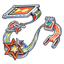

추천 광추
고요히 빛나는 불티
치확과 보석 강화 공격 지원
효과 자세히
SP 연동 화력과 린의 전투 스킬에 맞는 전광.
생명은 불태워야 하는 것
방어력 무시와 에너지 지원
효과 자세히
스킬을 여러 번 쓰는 린의 선택.
추궁할 수 없는 곳을 향해
치확과 필살기 후 피해
효과 자세히
스킬·필살기 화력을 보강.
멈추지 않는 연산
헤르타 상점 · 광역 피해 대안
효과 자세히
여러 적에게 공격을 하면 공격력·속도 조건을 활용.
추천 유물
별처럼 빛나는 천재 4 · 꿈의 땅 페나코니 2
- 머리
 주옵션HP부옵션목표 속도 · 치명타 확률 · 치명타 피해 · 공격력%
주옵션HP부옵션목표 속도 · 치명타 확률 · 치명타 피해 · 공격력% - 손
 주옵션공격력부옵션목표 속도 · 치명타 확률 · 치명타 피해 · 공격력%
주옵션공격력부옵션목표 속도 · 치명타 확률 · 치명타 피해 · 공격력% - 몸통
 주옵션치명타 확률부옵션목표 속도 · 치명타 피해 · 공격력%
주옵션치명타 확률부옵션목표 속도 · 치명타 피해 · 공격력% - 다리
 주옵션속도 / 공격력%부옵션목표 속도 · 치명타 확률 · 치명타 피해 · 공격력% (주옵션 제외)
주옵션속도 / 공격력%부옵션목표 속도 · 치명타 확률 · 치명타 피해 · 공격력% (주옵션 제외) - 구체
 주옵션양자 피해부옵션목표 속도 · 치명타 확률 · 치명타 피해 · 공격력%
주옵션양자 피해부옵션목표 속도 · 치명타 확률 · 치명타 피해 · 공격력% - 매듭
 주옵션에너지 회복효율 / 공격력%부옵션목표 속도 · 치명타 확률 · 치명타 피해 · 공격력% (주옵션 제외)
주옵션에너지 회복효율 / 공격력%부옵션목표 속도 · 치명타 확률 · 치명타 피해 · 공격력% (주옵션 제외)
이 조합을 추천하는 이유
양자 적 방어력 무시 강화. 장신구로 같은 속성인 아처 피해와 본인 에너지 보강.
재와 뼈마저 불사르는 대공 4 · 천 개의 별이 모인 도시 2
- 머리
 주옵션HP부옵션목표 속도 · 치명타 확률 · 치명타 피해 · 공격력%
주옵션HP부옵션목표 속도 · 치명타 확률 · 치명타 피해 · 공격력% - 손
 주옵션공격력부옵션목표 속도 · 치명타 확률 · 치명타 피해 · 공격력%
주옵션공격력부옵션목표 속도 · 치명타 확률 · 치명타 피해 · 공격력% - 몸통
 주옵션치명타 확률부옵션목표 속도 · 치명타 피해 · 공격력%
주옵션치명타 확률부옵션목표 속도 · 치명타 피해 · 공격력% - 다리
 주옵션속도 / 공격력%부옵션목표 속도 · 치명타 확률 · 치명타 피해 · 공격력% (주옵션 제외)
주옵션속도 / 공격력%부옵션목표 속도 · 치명타 확률 · 치명타 피해 · 공격력% (주옵션 제외) - 구체
 주옵션양자 피해부옵션목표 속도 · 치명타 확률 · 치명타 피해 · 공격력%
주옵션양자 피해부옵션목표 속도 · 치명타 확률 · 치명타 피해 · 공격력% - 매듭

주옵션에너지 회복효율 / 공격력%부옵션목표 속도 · 치명타 확률 · 치명타 피해 · 공격력% (주옵션 제외)
이 조합을 추천하는 이유
아처 연계 추가 공격 비중이 높을 때.
이 정도면 잘 키웠다
세팅에 따른 목표값 · —는 출처에 별도 기준 없음
| 스탯 | 추천 스탯 | 준종결 | 종결 |
|---|---|---|---|
| 공격력 | 2500[1]아처 연계 딜러 기준. | — | 3200 |
| 속도 | 134+ / 158+[2]아처 연계 딜러 134+ (자버프 20.4). 매 세트 서포터 158+는 스파클도 매+댄스! 댄스! 댄스!+바커공 158+로 교대 행동. | — | — |
| 치명타 확률 | 100%[3]양쪽 세팅 모두 100%. 연계 딜러는 스파클 전용 광추 치명타 확률 10% 참고. | — | 100% |
| 치명타 피해 | 120%[4]아처 연계 딜러 기준. | — | 180% |
육성 단계의 기준
준종결 수치는 원본 시트에 없습니다. 추천과 종결은 별도 세팅입니다. 종결 표의 기본 전제는 5성 명함·전용 광추 (학자 / 텐고쿠)입니다.
성혼과 추천 돌파
린이 주 딜러면 1돌 반복 강화 스킬, 아처와 스킬 배율을 올리려면 2돌.
1보석 30pt 소모 → 그림자 보석추천
동일 수량 저장. 다음 강화 스킬은 그림자 보석으로 사용.
2팀 스킬 피해 기존의 130%추천
린의 스킬 피해 +30% 추가.
3전투 스킬 +2 · 일반 공격 +1
해당 스킬과 대응 강화 스킬의 레벨을 올린다.
4자기 치피 버프 최대 2스택
붉은색•악마•3배속
5필살기·특성 +2
해당 스킬과 대응 강화 스킬의 레벨을 올린다.
6저항 관통 +20%
필살기마다 보석 +24pt와 보너스 턴.
추천 파티


기본 운영과 행적
기본 운영
보석 15pt 또는 SP 7pt에서 강화 스킬. 아처와 함께면 아처의 연속 스킬 조건을 살리고 필살기로 SP를 되돌린다.
행적 육성 순서
특성 → 필살기 → 전투 스킬 → 일반 공격. 승급 2단계 SP 상한과 아처 지원 먼저.
아하 속도 계산기 →